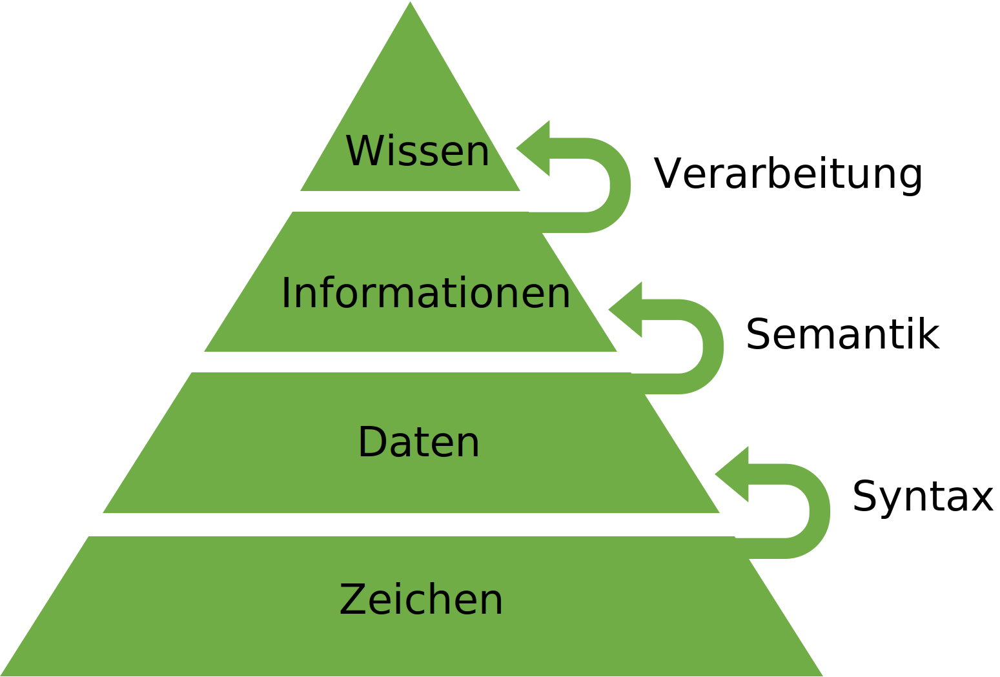

Wissenspyramide#
Die Wissenspyradmide ist ein Modell zur Darstellung der Extraktion von Wissen durch Computer. Sie dient gut der Erklärung einger Grundbegriffe der Informatik wie Zeichen, Syntax, Daten, Semantik, Informaitonen, Datenverarbeitung und Wissen. Diese Begriffe werden pyramidenförmig als 4 Ebenen und Transformationsprozesse dargestellt.

Zeichen#
Zeichen formen die Basis und das Wissen die Spitze der Pyramide.
Definition
- Zeichen
Ein Zeichen codiert einen einzelnen Buchstaben, eine Ziffer, ein Sonderzeichen oder ein Steuerzeichen.
Beispiel 1: Deutsches Alphabet: mit Umlauten und Zahlen, Satztrennungs und -endzeichen.
Zeichensatz:
abcdefgijklmnopqrstuvwxyzABCDEFGHIJKLMNOPQRSTUVWXYZäöüßÄÖÜ0123456789,:;-.!?
Beispiel 2: ASCII-Text (ISO 8859-1) ist eine Codierung von 256 darstellbare Zeichen in 8 Bits. (Ursprünglich waren es nur 128 Zeichen in 7 Bits.)
Syntax#
Syntax wird benötigt um Zeichen in Daten zu überführen.
Definition
- Syntax
Formale Regeln, die definieren, wie wohlgeformte Ausdrücke auf Basis eines Zeichensatzes gebildet werden.
Beispiel 1: Deutsche Grammatik: Ein Satz besteht aus mehreren Wörtern mit mehreren alpha-numerischen Zeichen aus
a-zA-Z0-9. Zwei Worte sind durch ein Leerzeichen getrennt. Ein Wort kann mit einem Satztrennungszeichen aus,:;-beendet werden, außer am Ende des Satzes. Jeder Satz endet mit einem Satzendzeichen aus.!?
Beispiel 2: HTML (Internetseite) - Jede Zeile enthält eine beliebige Folge von ASCII Zeichen. Jede Zeile endet mit einem Zeilenvorschub 10 (Linux) oder Wagenrücklauf 13 und Zeilenvorschub 10 (Windows). Eine Zeile kann einen HTML-Tag enthalten, der immer mit dem Zeichen
<beginnt, darauf folgt der Elementname und ggf. Attribute und endet mit>.
Daten#
Daten werden aus Zeichen extrahiert, sie sind eine Vorform von Informationen.
Definition
- Daten
Eine wiederholt interpretierbare Darstellung von Information in formalisierter Art, geeignet zur Kommunikation, Interpretation oder Verarbeitung.
Beispiel 1: Ein entsprechend unseren Regeln syntaktisch korrekter Satz lautet z.B. „Ich Bahnhof nur verstehe.“ Dieser macht allerdings keinen Sinn.
Beispiel 2: HTML Textdatei (*.html).
Semantik#
In der Kommunikation ist es nicht nur notwendig formal korrekte Inhalte zu formulieren, sondern es ist auch wichtig die Bedeutung der Inhalte zu kennen und interpretieren zu können, das geschieht durch Semantik.
Definition
- Semantik
Vorgaben für die Interpretation von Daten.
Beispiel 1: So muss in einem Satz nicht nur der Satzbau stimmen, sondern es muss auch die Bedeutung der Worte bekannt sein. Im deutschem Wörterbuch steht z.B. die Definition von “Bahnhof”: Gesamtkomplex einer Bahnstation mit Gleisanlagen und zugehörigen Gebäuden; zum Bahnhof gehörendes Gebäude mit [großer] Halle, in der sich die Schalter für Fahrkarten und Gepäck, Wartesäle, Geschäfte o. Ä. befinden.
Beispiel 2: HTML Elemente
definiert einen Absatz
definiert ein Bild
definiert eine Tabelle
Informationen#
Informationen haben einen spezifischen Sinn und Zweck.
Definition
- Informationen
Daten, die mit Sinn und Zweck versehen sind. Sie haben Bedeutung und sind für einen bestimmten Zweck organisiert. Informationen zum Beispiel sind eine Sammlung von Daten mit zugehörigen Erklärungen, Interpretationen und anderes Textmaterial, die ein bestimmtes Objekt, Ereignis oder einen bestimmten Prozess betreffen.
Beispiel 1: Korrekter deutscher Satz z.B. „Ich verstehen nur Bahnhof.” ist zwar syntaktisch korrekt und wir kennen die Bedeutung jedes Wortes. Allerdings bleibt der Satz für Ausländer unverständlich, weil ihnen der Kontext fehlt die Redewendung zu verstehen.
Beispiel 2: HTML Textdatei (*.html).
Verarbeitung#
Informationen müssen erst verarbeitet werden, um sie zu verknüpfen und Wissen abzuleiten.
Definition
- Verarbeitung
Verknüpfung von Informationen durch Algorithmen, Erfahrungen, Werte und Fachkentnissen.
Beispiel 1: Deutsche haben die Erfahrung, dass „Ich verstehen nur Bahnhof.“ eine Redewendung ist.
Beispiel 2: Webbrowser - Ein Webbrower interpretiert die HTML-Tags und render daraus eine Webseite
Wissen#
Wissen ist die höchste Form der Datenverarbeitung und erfordert, die erfolgreiche verwendung von Syntax, Semantik, und Verarbeitung.
Definition
- Wissen
Die gesammelten, verknüpften Informationen über einen bestimmten Sachverhalt, integriert mit persönlichen Erfahrungen. Das Wissen weißt eine wesentlich höhere Komplexität als die Information auf und ist eines der höchsten Güter einer Unternehmung. Mittels Wissen lassen sich Entscheidungen treffen und Aktionen einleiten.
Beispiel 1: „Ich verstehen nur Bahnhof.“ bedeutet nichts verstehen oder verstehen wollen.
Beispiel 2: Fertig gerenderte Webseite